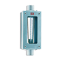

King
Harrington is your trusted supplier of high-quality King flow sensors. King flow sensors are used to measure the flow rate of liquid or gas through a pipeline over a given period of time. Select your product to request a quote, get additional information, and explore purchasing options.
 Series 7200 Flowmeter, 200.0 GPM, 2" Female NPT, 316L Stainless Steel Internal Components, Viton® O-Ring, 316L Stainless Steel Fittingper EA · Sign in for price
Series 7200 Flowmeter, 200.0 GPM, 2" Female NPT, 316L Stainless Steel Internal Components, Viton® O-Ring, 316L Stainless Steel Fittingper EA · Sign in for price- Series 7200 Flowmeter, 200.0 GPM, 2" Female NPT, 316L Stainless Steel Internal Components, EPR O-Ring, PVC Fittingsper EA · Sign in for price
- Series 7200 Flowmeter, 200.0 GPM, 2" Female NPT, 316L Stainless Steel Internal Components, Viton® O-Ring, PVC Fittingper EA · Sign in for price

Series 7310 Flowmeter, 76.0 SCFM, 1" Female NPT, 316L Stainless Steel Float, 316L Stainless Steel Fitting, EPR O-Ring, Without Alarmper EA · Sign in for price- Series 7310 Flowmeter, 330.0 SCFM, 2" Female NPT, 316L Stainless Steel Float, 316L Stainless Steel Fitting, EPR O-Ring, Without Alarmper EA · Sign in for price
- Series 7310 Flowmeter, 245.0 SCFM, 2" Female NPT, 316L Stainless Steel Float, 316L Stainless Steel Fitting, EPR O-Ring, Without Alarmper EA · Sign in for price
- Series 7310 Flowmeter, 6.1 SCFM, 1/2" Female NPT, 316L Stainless Steel Float, 316L Stainless Steel Fitting, Viton® O-Ring, Without Alarmper EA · Sign in for price
- Series 7310 Flowmeter, 1.5 GPM, 1/2" Female NPT, 316L Stainless Steel Float, 316L Stainless Steel Fitting, Viton® O-Ring, Without Alarmper EA · Sign in for price
- Series 7310 Flowmeter, 12.4 SCFM, 1/2" Female NPT, 316L Stainless Steel Float, 316L Stainless Steel Fitting, Viton® O-Ring, Without Alarmper EA · Sign in for price
- Series 7310 Flowmeter, 3.0 GPM, 1/2" Female NPT, 316L Stainless Steel Float, 316L Stainless Steel Fitting, Viton® O-Ring, Without Alarmper EA · Sign in for price
- Series 7310 Flowmeter, 25.0 SCFM, 3/4" Female NPT, 316L Stainless Steel Float, 316L Stainless Steel Fitting, Viton® O-Ring, Without Alarmper EA · Sign in for price
- Series 7310 Flowmeter, 41.0 SCFM, 3/4" Female NPT, 316L Stainless Steel Float, 316L Stainless Steel Fitting, Viton® O-Ring, Without Alarmper EA · Sign in for price
- Series 7310 Flowmeter, 10.0 GPM, 3/4" Female NPT, 316L Stainless Steel Float, 316L Stainless Steel Fitting, Viton® O-Ring, Without Alarmper EA · Sign in for price
- Series 7310 Flowmeter, 50.0 SCFM, 1" Female NPT, 316L Stainless Steel Float, 316L Stainless Steel Fitting, Viton® O-Ring, Without Alarmper EA · Sign in for price
- Series 7310 Flowmeter, 12.0 GPM, 1" Female NPT, 316L Stainless Steel Float, 316L Stainless Steel Fitting, Viton® O-Ring, Without Alarmper EA · Sign in for price
- Series 7310 Flowmeter, 76.0 SCFM, 1" Female NPT, 316L Stainless Steel Float, 316L Stainless Steel Fitting, Viton® O-Ring, Without Alarmper EA · Sign in for price
- Series 7310 Flowmeter, 18.0 GPM, 1" Female NPT, 316L Stainless Steel Float, 316L Stainless Steel Fitting, Viton® O-Ring, Without Alarmper EA · Sign in for price
- Series 7310 Flowmeter, 100.0 SCFM, 1" Female NPT, 316L Stainless Steel Float, 316L Stainless Steel Fitting, Viton® O-Ring, Without Alarmper EA · Sign in for price
- Series 7310 Flowmeter, 25.0 GPM, 1" Female NPT, 316L Stainless Steel Float, 316L Stainless Steel Fitting, Viton® O-Ring, Without Alarmper EA · Sign in for price
- Series 7310 Flowmeter, 35.0 GPM, 1" Female NPT, 316L Stainless Steel Float, 316L Stainless Steel Fitting, Viton® O-Ring, Without Alarmper EA · Sign in for price
- Series 7310 Flowmeter, 80.0 GPM, 2" Female NPT, 316L Stainless Steel Float, 316L Stainless Steel Fitting, Viton® O-Ring, Without Alarmper EA · Sign in for price
- Series 7310 Flowmeter, 100.0 GPM, 2" Female NPT, 316L Stainless Steel Float, 316L Stainless Steel Fitting, Viton® O-Ring, Without Alarmper EA · Sign in for price
- Series 7310 Flowmeter, 120.0 GPM, 2" Female NPT, 316L Stainless Steel Float, 316L Stainless Steel Fitting, Viton® O-Ring, Without Alarmper EA · Sign in for price
- Series 7310 Flowmeter, 150.0 GPM, 2" Female NPT, 316L Stainless Steel Float, 316L Stainless Steel Fitting, Viton® O-Ring, Without Alarmper EA · Sign in for price
- Series 7310 Flowmeter, 245.0 SCFM, 2" Female NPT, 316L Stainless Steel Float, 316L Stainless Steel Fitting, Viton® O-Ring, Without Alarmper EA · Sign in for price
- Series 7310 Flowmeter, 60.0 GPM, 2" Female NPT, 316L Stainless Steel Float, 316L Stainless Steel Fitting, Viton® O-Ring, Without Alarmper EA · Sign in for price
- Series 7310 Flowmeter, 76.0 SCFM, 1" Female NPT, 316L Stainless Steel Float, 316L Stainless Steel Fitting, Viton® O-Ring, With Alarmper EA · Sign in for price
- Series 7310 Flowmeter, 100.0 SCFM, 1" Female NPT, 316L Stainless Steel Float, 316L Stainless Steel Fitting, Viton® O-Ring, With Alarmper EA · Sign in for price
- Series 7310 Flowmeter, 40.0 GPM, 2" Female NPT, Teflon® Float, 316L Stainless Steel Fitting, EPR O-Ring, Without Alarmper EA · Sign in for price
- Series 7310 Flowmeter, 60.0 GPM, 2" Female NPT, Teflon® Float, 316L Stainless Steel Fitting, EPR O-Ring, Without Alarmper EA · Sign in for price
- Series 7310 Flowmeter, 20.0 GPM, 1" Female NPT, Teflon® Float, 316L Stainless Steel Fitting, Buna-N O-Ring, Without Alarmper EA · Sign in for price
- Series 7310 Flowmeter, 1.0 GPM, 1/2" Female NPT, Teflon® Float, 316L Stainless Steel Fitting, Viton® O-Ring, Without Alarmper EA · Sign in for price
- Series 7310 Flowmeter, 7.6 GPM, 1" Female NPT, Teflon® Float, 316L Stainless Steel Fitting, Viton® O-Ring, Without Alarmper EA · Sign in for price
- Series 7310 Flowmeter, 15.0 GPM, 1" Female NPT, Teflon® Float, 316L Stainless Steel Fitting, Viton® O-Ring, Without Alarmper EA · Sign in for price
- Series 7310 Flowmeter, 20.0 GPM, 1" Female NPT, Teflon® Float, 316L Stainless Steel Fitting, Viton® O-Ring, Without Alarmper EA · Sign in for price
- Series 7310 Flowmeter, 40.0 GPM, 2" Female NPT, Teflon® Float, 316L Stainless Steel Fitting, Viton® O-Ring, Without Alarmper EA · Sign in for price
- Series 7310 Flowmeter, 60.0 GPM, 2" Female NPT, Teflon® Float, 316L Stainless Steel Fitting, Viton® O-Ring, Without Alarmper EA · Sign in for price
- Series 7310 Flowmeter, 80.0 GPM, 2" Female NPT, Teflon® Float, 316L Stainless Steel Fitting, Viton® O-Ring, Without Alarmper EA · Sign in for price
- Series 7310 Flowmeter, 100.0 GPM, 2" Female NPT, Teflon® Float, 316L Stainless Steel Fitting, Viton® O-Ring, Without Alarmper EA · Sign in for price
- Series 7310 Flowmeter, 3.0 GPM, 1/2" Female NPT, 316L Stainless Steel Float, PVC Fitting, EPR O-Ring, Without Alarmper EA · Sign in for price